Email: odoomates@gmail.com
Plan jobs at the customer site on your technicians, run them from their phone and send the report to the customer.
Built on Project, Timesheets and the Odoo Mates Planning engine: no new app to learn for the office.
Screens from a test database with the demo data.
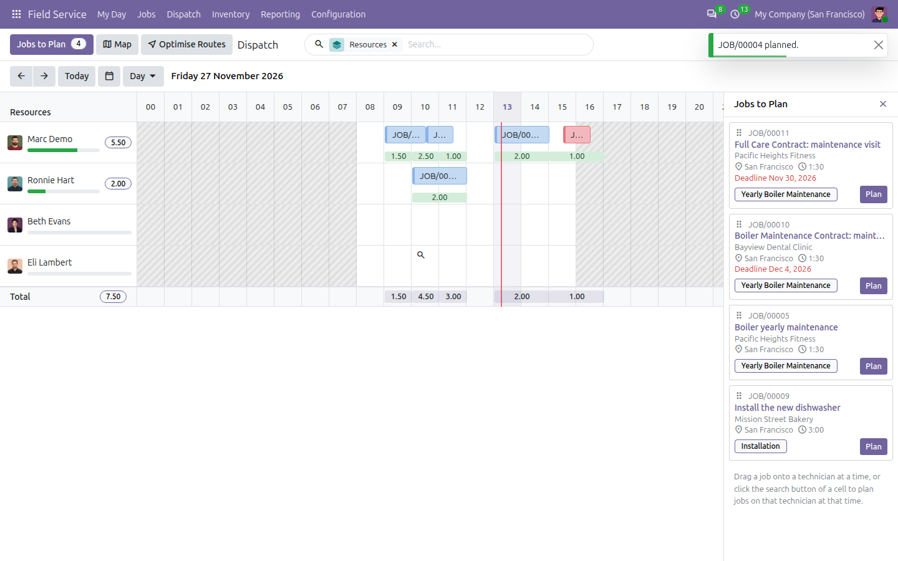
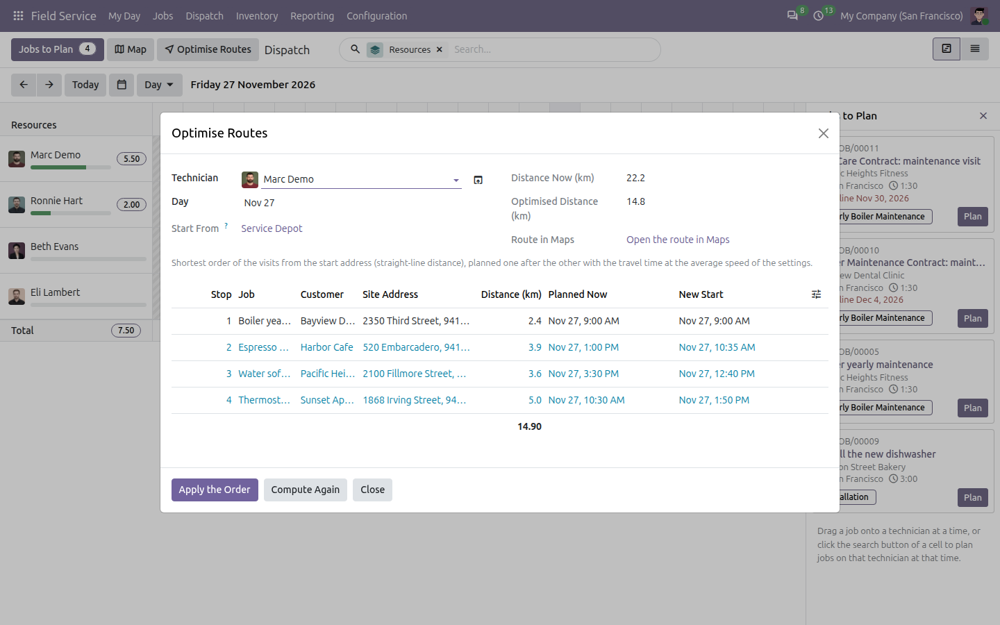
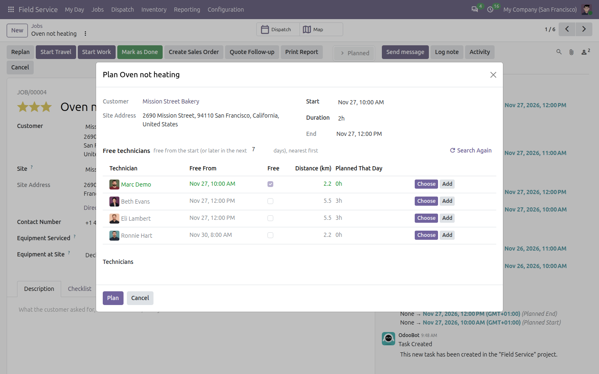
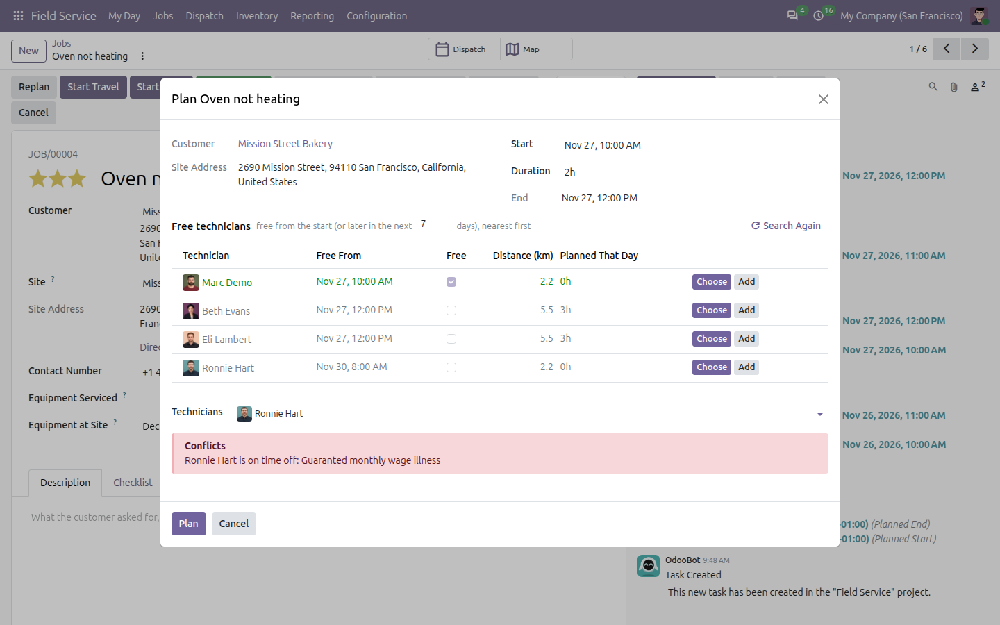
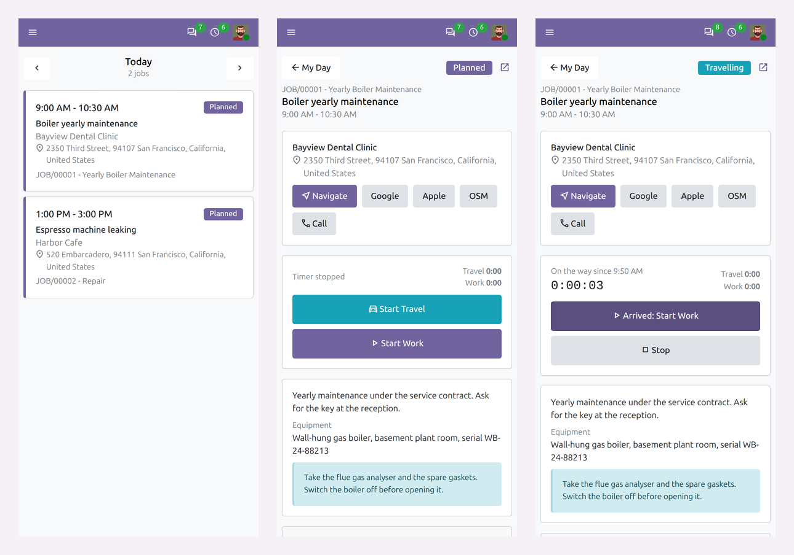
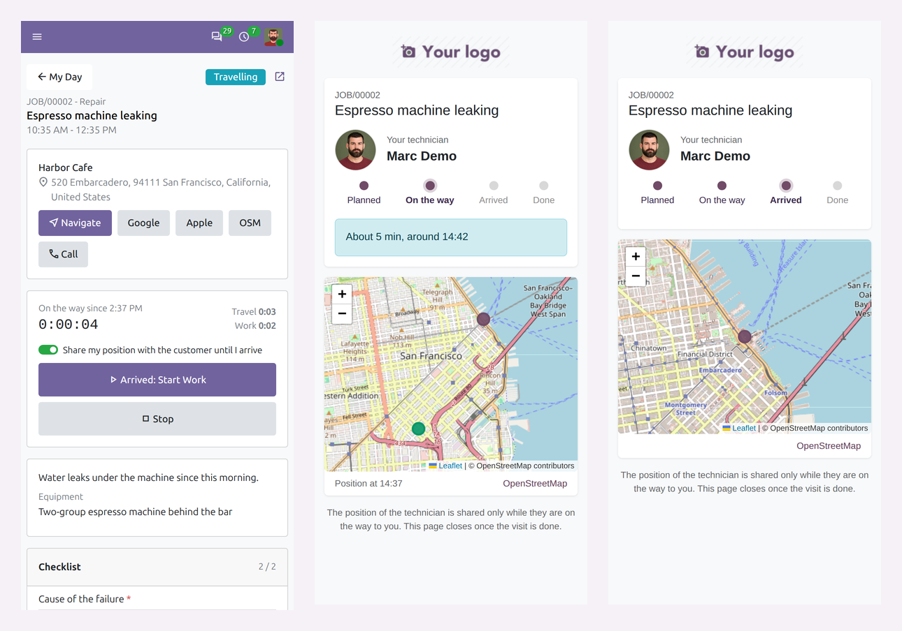
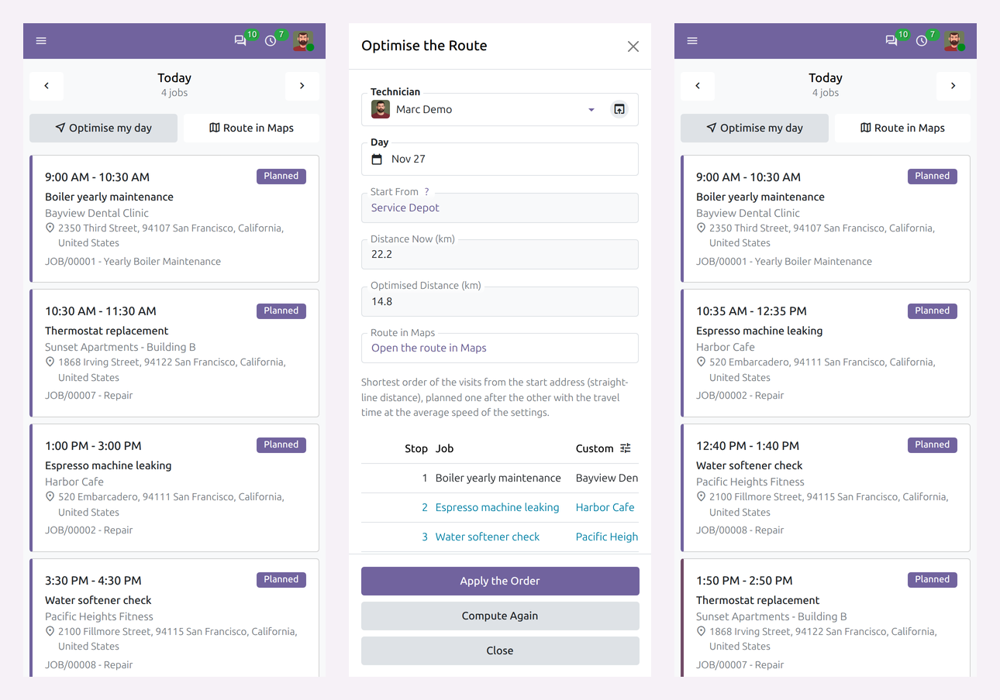
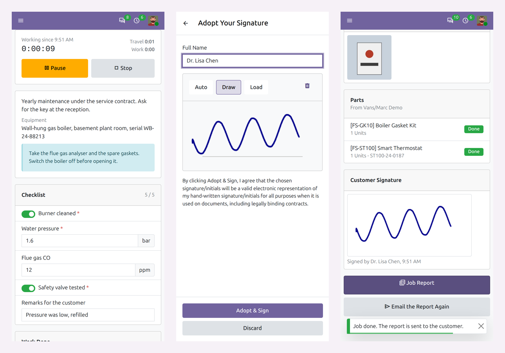
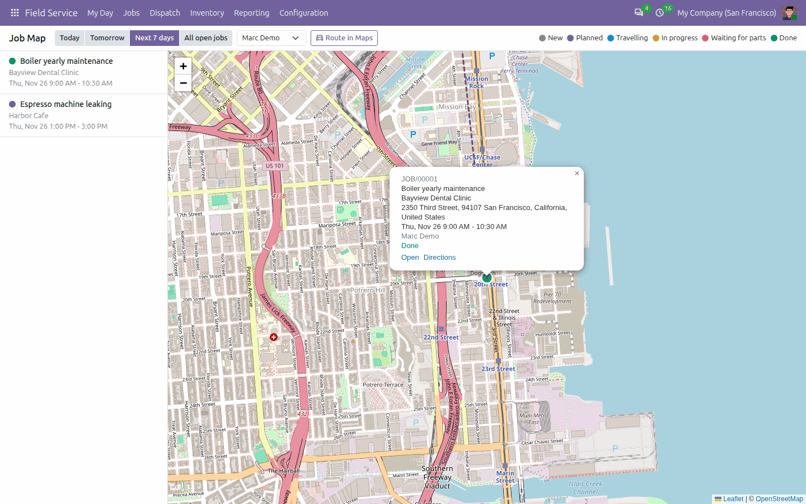
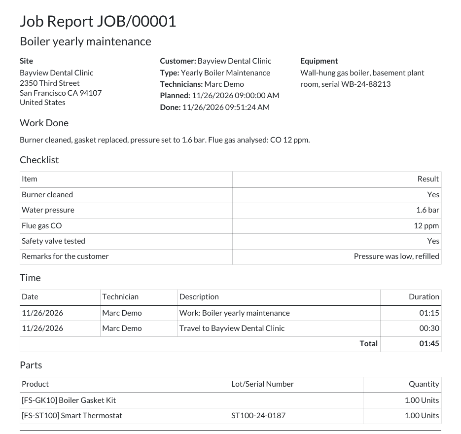
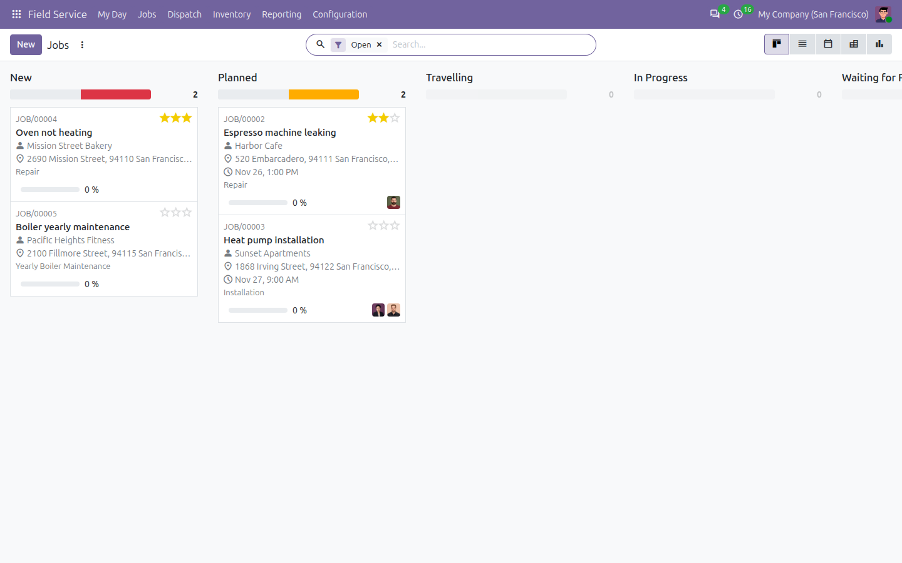
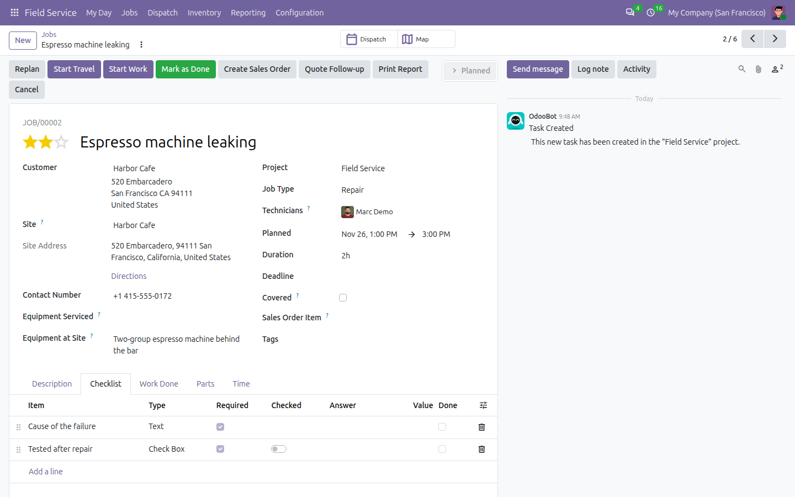
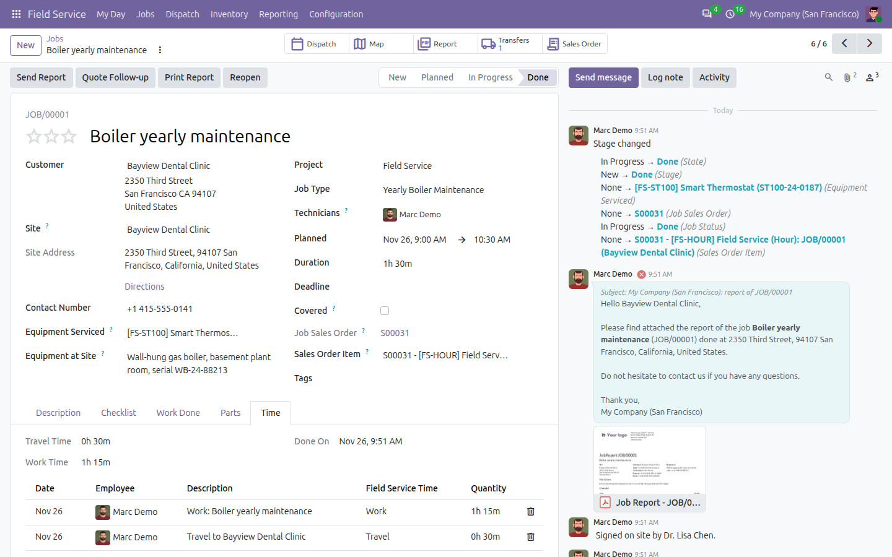
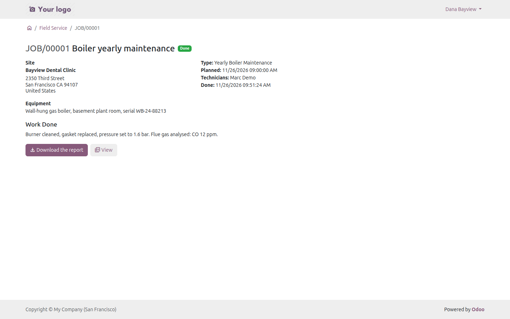
Your rating helps others find it; your requests and pull requests decide what comes next.
★ Rate us on Odoo Apps 💡 Request a feature 🐛 Report an issue ★ Star us on GitHub